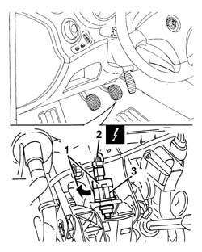
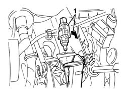

1060G38 brake pedal switch - r r
- Path
- Procedures > 10 ENGINE > 1060 DIESEL FUEL INJECTION > 1060G pressure pump electric control > 1060G38 brake pedal switch - r r
- Kind
- repair procedure (removal / refitting; the operation number is the code)
- Applies to
- engines: 1.9 JTD 8v , 1.9 JTD 16v, 2.4 JTD 10v, 2.4 JTD 20v; all production periods
- Interactive page
- https://sloeber94.github.io/elrnDB-a156/en/#/3237816
Applies to: engines: 1.9 JTD 8v , 2.4 JTD 10v; all production periods
 Removing
Removing
 Refitting
RefittingMake sure that the ignition is off (STOP position), then disconnect the negative battery terminal (refer to op. 5530B10 battery - r+r ).
 | Name | Connector |
|---|---|---|
- | Battery |
Disconnect the electrical connection from the switch on the brake pedal.
| Name | Connector |
|---|---|---|
- | Brake pedal switch |
Rotate and remove the switch on the brake pedal.
Applies to: engines: 1.9 JTD 8v , 2.4 JTD 10v; all production periods
Refitting
RemovingPosition the brake pedal switch in its seat.
Connect the electrical connection to the switch on the brake pedal.
Connect the negative (-) battery terminal.
Applies to: engines: 1.9 JTD 16v; all production periods
Removing
RefittingEnsure that the ignition key is in the OFF position, then disconnect the negative battery terminal (-).
| Name | Connector |
|---|---|---|
- | Battery |
1. Turn the switch on the brake pedal clockwise through 90 degrees and remove it.
2. Disconnect the electrical connection from the switch on the brake pedal.
| Name | Connector |
|---|---|---|
2 | Brake pedal switch |
3. Remove the brake pedal switch.

Applies to: engines: 1.9 JTD 16v; all production periods
Refitting
Removing1. Press the brake pedal, then refit the brake pedal switch and turn through 90 degrees anticlockwise until it clicks home.

Applies to: engines: 1.9 JTD 16v; all production periods
Release the brake pedal.
Connect the electrical connection to the switch on the brake pedal.
Connect the negative (-) battery terminal.
Check the operation of the brake lights.
Applies to: engines: 2.4 JTD 20v; all production periods
Removing
RefittingEnsure that the ignition key is in the OFF position, then disconnect the negative battery terminal (-).
| Name | Connector |
|---|---|---|
- | Battery |
Turn the switch on the brake pedal clockwise through 90 degrees and remove it.
Disconnect the electrical connection from the switch on the brake pedal.
| Name | Connector |
|---|---|---|
- | Brake pedal switch |
Remove the brake pedal switch.
Applies to: engines: 2.4 JTD 20v; all production periods
Refitting
RemovingPress the brake pedal, then refit the brake pedal switch and turn through 60 degrees clockwise until it clicks home on the bracket.
Release the brake pedal so the servobrake push rod is in rest position.
Move the pedal to the end of its travel to settle the switch in its housing.
Check there is clearance between the brake bracket and the switch.
Connect the electrical connection to the switch on the brake pedal.
Connect the negative (-) battery terminal.
Check the operation of the brake lights.